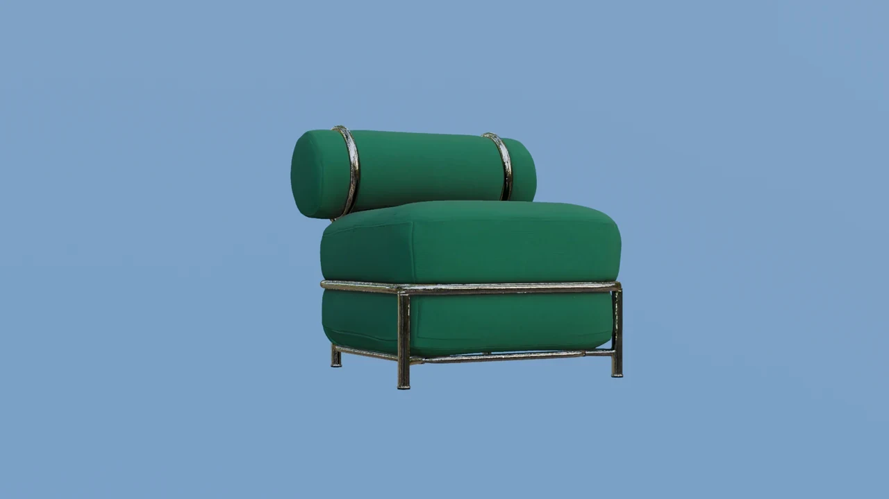
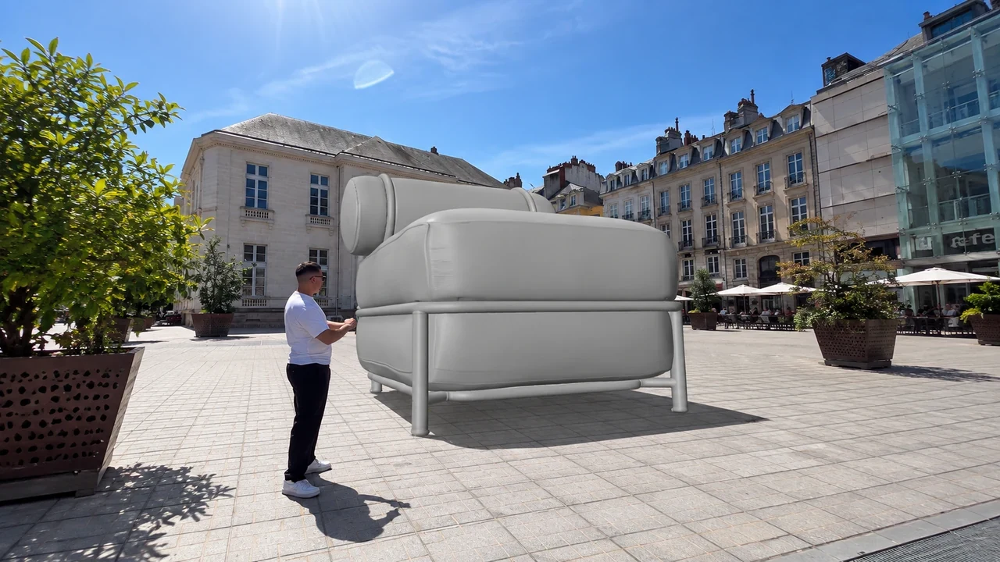
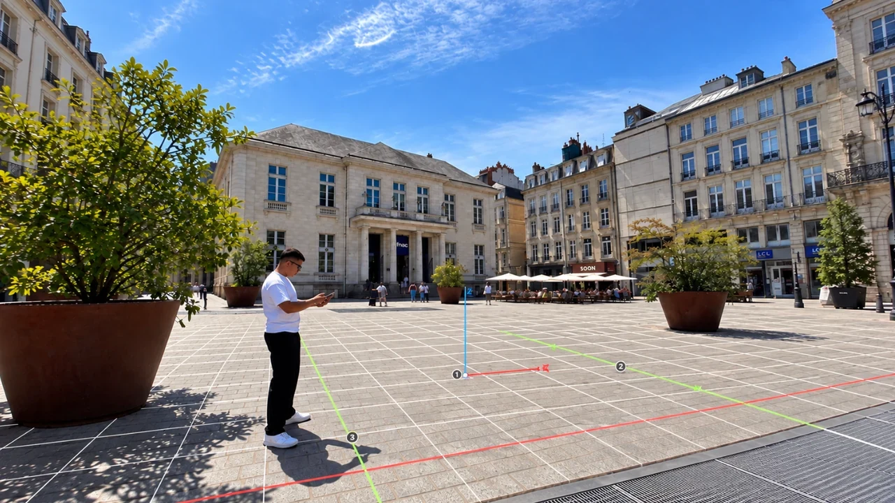

[ 05 ]
IKEA
2026
MISE EN SCÈNE 3D D’UN UNIVERS PRODUIT ILLUSTRANT L’IDENTITÉ DE LA MARQUE AVEC UNE APPROCHE VISUELLE IMPACTANTE.
Cette réalisation explore une mise en scène publicitaire 3D autour d’un produit IKEA. La production associe création de scène, animation, tracking et compositing afin d’intégrer le produit dans un univers CGI destiné à la communication digitale.
- MODÉLISATION
- ANIMATION
- RENDU
- COMPOSITING
- COLOR GRADING
LOGICIELS : BLENDER / AFTER EFFECTS


